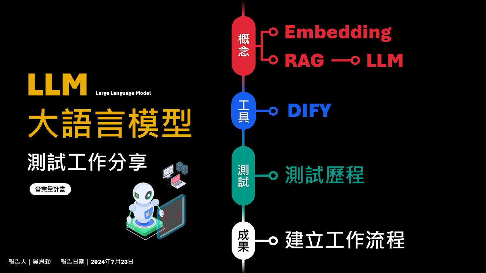
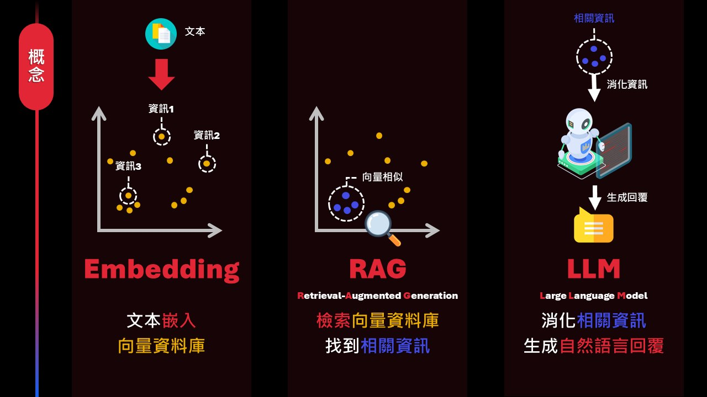
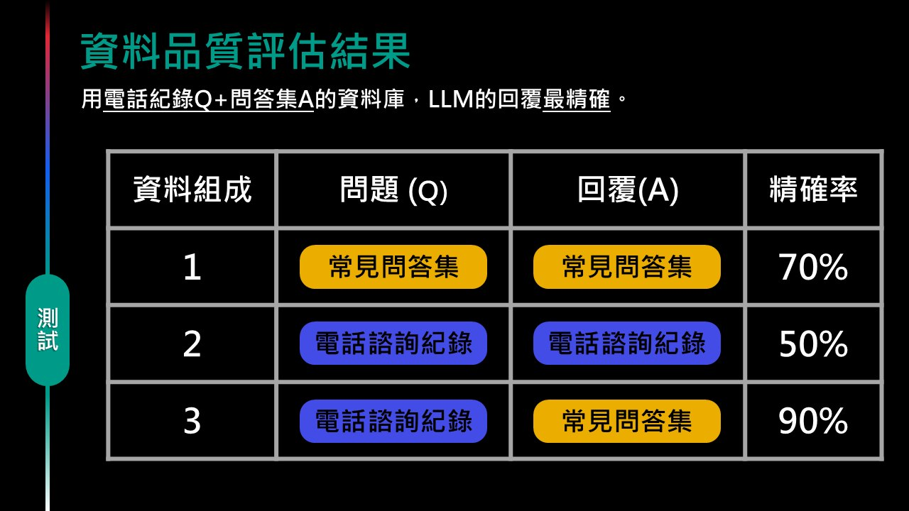

行政工作實績
（二）AI 客服導入實作與流程自動化評估參與專案 AI 客服導入（2026年 1 月上線）：比較多種 LLM 與 embedding／RAG 方案並建立測試紀錄；針對電話紀錄與常見問答兩種資料測試三種組合，採「電話紀錄之提問＋常見問答之回答」，以涵蓋多樣真實問法並降低誤答；擬定資料庫整理 SOP 與清洗流程，資料品質不佳時改向第一線客服徵集常見問答；由 20～30 位同仁參與、累計至少 3,000 筆測試，依題型統計準確率（單一題型達約 90%），並依結果調整資料。
Dify 工作流建置：使用 Dify 自建 AI 工作流，便於追蹤與除錯；撰寫 AI 技術科普與導入評估報告，協助承辦單位決策。
名單自動化評估：研究過往作法後，建議調整判斷順序並搭配程式自動化，無須全面交由 LLM 處理，獲甲方採納。
大語言模型 (LLM) 測試工作分享簡報成果（共 6 張投影片）
跨組分享 ＆ 內部技術教育訓練

1. 簡報封面

2. 備料與烹調

3. RAG架構圖

4. 3x3方案測試

5. 測試紀錄表

6. 品質評估統計
吳思穎 Alice Wu ｜ 應徵 justfont 行政營運專員
0958-321-139
ichbinalicewu35@gmail.com
字體：justfont 粉圓體 ＆ 源泉圓體
3 / 6